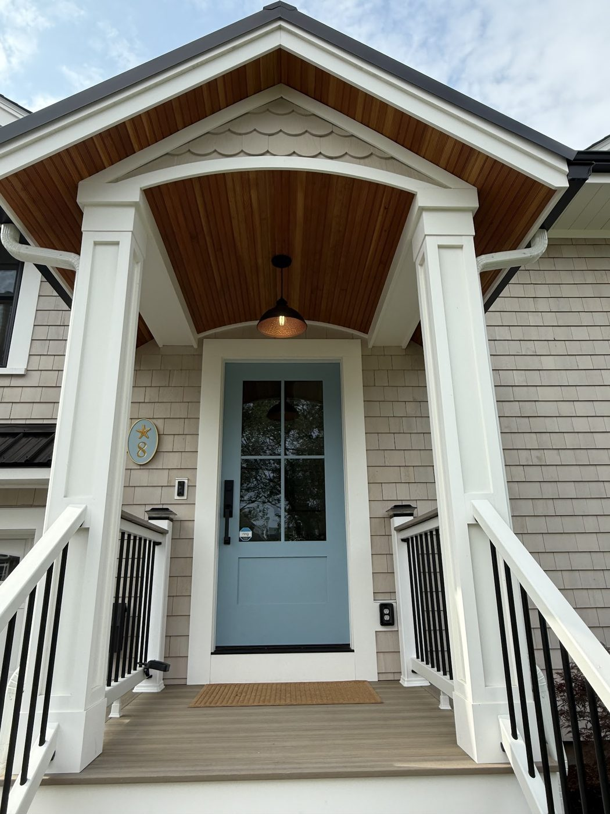

roof check · Facebook
You do not need to climb up to spot roof trouble. Dark streaks on a ceiling, grit collecting in the gutters, and shingles lying flat where they should overlap are all visible from the ground.
Exterior Innovations, LLC has been putting roofs, siding, windows, doors, decks and paint on buildings across Rhode Island and Massachusetts for over 20 years. Quality craftsmanship, with care and communication.
Every roofing and siding product you can buy comes with two documents: a warranty, and an installation instruction from the manufacturer. The first one quietly depends on the second. Fasteners, ventilation, flashing, overlap — get one of them wrong and the coverage you paid for is the coverage you don't have.
That is an invisible difference on the day the job finishes and a very visible one eight years later. It is also why the product going on your building, and what its warranty asks of the people installing it, is part of the conversation before the work starts rather than after.
Details matter. We pride ourselves in following the manufacturer's specifications for the products we install to ensure that product warranties are honored.
The envelope of the building — everything between the weather and the inside of your house.
The decision you make maybe twice while you own the house, and the one where cutting the number is felt the longest.
We are clear about the product going on, what its warranty covers, and what the manufacturer requires of us to keep it intact.
A full re-side changes the building more than anything else you can do to the outside of it — and it is unforgiving where it meets soffits, corners, and trim.
Corners, soffits and trim are where a re-side is either right or obviously not, and they are slow work for a reason.
Supplied and installed — the openings where heat and water actually leave and enter a building.
Outdoor structure built to be walked on for years, not to look good for one summer.
Paint on the outside of a house is a maintenance product. It gets treated like one.

Two things we would put in writing, because they are the two things people complain about with contractors.
We recognize that your time is valuable and we respect that. You can count on us to show up on time, and complete your project in a timely manner.
Construction can be stressful. That's why we're committed to communicating with you every step of the way, from the proposal process through completion.
Tell us about the project and we will come look at it. Estimates are free, and the fastest way to start is to call us directly.
(401) 787-3050Content